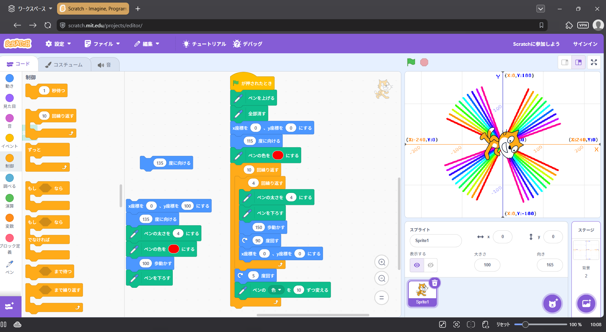
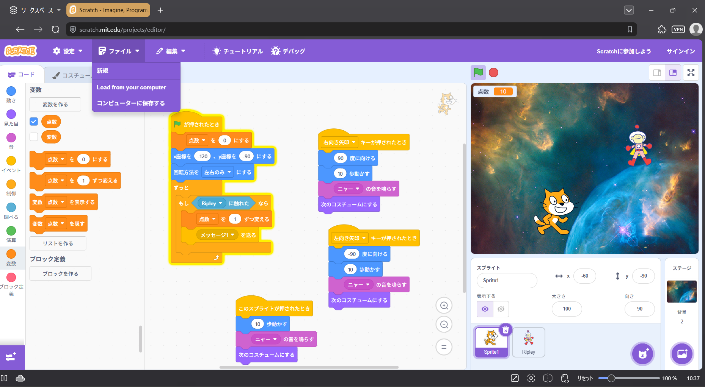

1週目のレポート ： 公大高専１年実習I-1
2a班06番 ニックネームS
第1週目
1-1 サイエンスアート

1.内容
スクラッチでのキャラクターの座標の移動や向きの変更方法と、ペンを使った線の描画方法を学び、
見本としてあったコードを応用して、オリジナルのカラフルなサイエンスアートを描画するコードを組んだ。
2.感想
スクラッチは小学生の頃に少しだけ触った経験があったので、それを思い出しながらコードを組んだ。
スプライトの向きや位置を動かすことはスムーズにできたが、ペンを使った線の描画が難しかった。
1-2 ゲーム

1.内容
1-1サイエンスアートでの内容に加えてキーが押された場合など条件で動きを変えるコードの組み方も使って、
ランダムなスピードで落ちてくる宇宙飛行士に猫が触れると宇宙飛行士が消えるゲームを作成した。
2.感想
もし～ならブロックの空白部分に当てはまるブロックを当てはめることで変数を変える指示を送る方法を
教わったときに、これを応用するともっと複雑な場合分けをして指示を遅れるのではないかと考えた。
1-3 ホームページ作成
私のホームページ
1.内容
githubアカウントの作成、「私のホームページ」の編集、第1週目レポートへのサイエンスアートと
ゲームのコードのスクリーンショット画像貼り付け、各ページへのリンク等のユーザーID部分の変更を行った。
2.感想
私はgithubを使うことが始めてでコードも書いたことが無かったので、コードを書く画面を見てワクワクした。
また、レポート課題を進めるためにも授業内で教わった改行の方法brは覚えておくべきだと感じた。
各ページへのリンク
1週目のレポート
2週目のレポート
3週目のレポート
私のホームページ